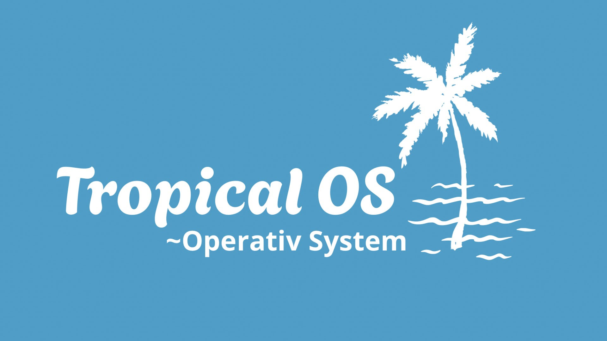
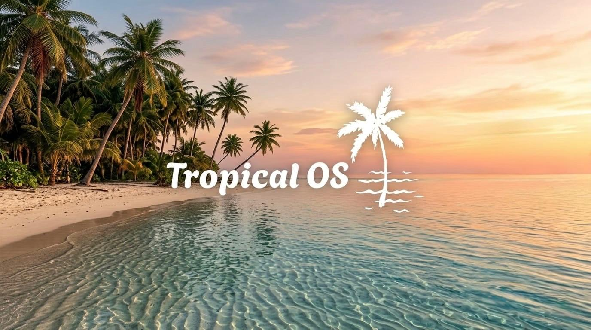

--- ## 💻 What is Tropical OS? **Tropical OS** is an operating system born with a clear vision: combining the rock-solid stability and efficiency of **Debian Linux** with the iconic, unforgettable, and elegant **"Vibrant Glass" aesthetics of the early 2000s**. We believe that an operating system shouldn't just be functional—it should be beautiful to look at, nostalgic, and tailored specifically to the user. With Tropical OS, we are bringing back the premium transparency effects, glossy finishes, and crystal-clear design language of that golden era, completely optimized to run smoothly on modern hardware. --- ## 🛠️ Key Features * **Debian Core:** Maximum compatibility with `.deb` packages, reliable Linux kernel stability, and advanced security. * **Custom "Glass" Interface:** A tailored desktop environment that faithfully recreates a premium translucent user interface (transparencies, blurred borders, and desktop widgets). * **Lightweight & Fast:** This system is highly optimized to consume very low resources, breathing new life even into older PCs without sacrificing its beautiful visuals. * **Out-of-the-Box Ready:** Comes with an essential suite of pre-installed software, ready for web browsing, working, and coding. --- ## 📅 Project Status & Download * **Current Version:** Active development (Work in Progress 🛠️) * **ISO Availability:** *Not published yet.* We are working hard to polish the user interface and system components before releasing the first public Alpha testing image. --- ### 👋 Join the Community! Are you a fan of classic design, a customization enthusiast, or just looking for a truly unique operating system? You are in the right place. Leave a **Star ⭐️** on this repository to support the development and stay updated on our latest progress logs! ✈️ **Join our Telegram channel:** [t.me/tropicalos](https://t.me/tropicalos)